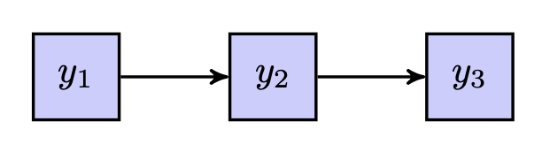

here::here("code", "_common.R") |>
source()
# Load packages
if (!requireNamespace("pacman")) install.packages("pacman")
pacman::p_load(lavaan, semPlot, tidyr, ggdag, dagitty)22 Analisi dei percorsi
In questo capitolo imparerai a
- Comprendere il ruolo delle visualizzazioni nell’analisi dei percorsi e la loro importanza per comunicare le relazioni tra variabili.
- Identificare e distinguere le variabili esogene ed endogene in un path diagram.
- Utilizzare i path diagram per rappresentare graficamente le relazioni dirette, indirette e totali tra le variabili.
- Interpretare i parametri della path analysis.
- Applicare le regole di Wright per decomporre correlazioni e covarianze in base ai percorsi causali.
- Modellare le medie delle variabili in un’analisi dei percorsi, integrando le informazioni sulle medie nella struttura complessiva del modello.
- Eseguire l’analisi dei percorsi con
lavaan.
Prerequisiti
- Leggere Path analysis in Mplus: A tutorial using a conceptual model of psychological and behavioral antecedents of bulimic symptoms in young adults di Barbeau et al. (2019).
Preparazione del Notebook
22.1 Introduzione
Le visualizzazioni rivestono un ruolo fondamentale nel comunicare in modo chiaro e sintetico le relazioni tra variabili. Questo è particolarmente evidente quando si opera con modelli di equazioni strutturali (SEM) che delineano una rete di interconnessioni tra variabili sia osservabili che latenti. In tali contesti, i ricercatori frequentemente si avvalgono di strumenti grafici per agevolare la specificazione e l’esplicitazione del modello, oltre che per presentare in maniera comprensibile i risultati ottenuti.
L’analisi del percorso, o path analysis, è una tecnica statistica multivariata utilizzata per esaminare e descrivere le relazioni causali tra un insieme di variabili. Questo metodo si avvale di modelli grafici, noti come diagrammi di percorso, che rappresentano le relazioni ipotizzate tra le variabili, illustrando graficamente le relazioni dirette, indirette e reciproche tra di esse.
Il fulcro dell’analisi del percorso è la decomposizione e la quantificazione delle relazioni tra le variabili, permettendo agli analisti di distinguere tra effetti diretti, indiretti e totali:
- gli effetti diretti corrispondono all’influenza immediata che una variabile esercita su un’altra,
- gli effetti indiretti rappresentano l’impatto mediato attraverso una o più variabili intermedie,
- l’effetto totale è la somma degli effetti diretti e indiretti.
Wright (1934), genetista pionieristico attivo presso il Dipartimento dell’Agricoltura degli Stati Uniti (USDA) negli anni ’30 del Novecento, sviluppò negli anni ’20 i primi diagrammi di percorso (path diagrams), strumenti innovativi per rappresentare visivamente relazioni causali all’interno di modelli di equazioni strutturali (SEM). Questa metodologia, inizialmente applicata in genetica quantitativa, si diffuse progressivamente in ambito multidisciplinare, affermandosi come uno strumento efficace per distinguere gli effetti diretti e indiretti tra variabili, oltre a fornire un quadro formale per testare la robustezza e la validità delle ipotesi teoriche sottostanti ai modelli.
22.2 Path diagram
Nel path diagram è possibile distinguere due tipi di variabili: quelle che sono influenzate da altre variabili nel sistema e quelle che fungono da sorgenti di effetti.
Variabili esogene: rappresentano elementi esterni al sistema in esame. Esse agiscono come variabili indipendenti, generando effetti in modo causale senza essere influenzate da altre variabili presenti nel modello. Nel diagramma, le loro cause si trovano al di fuori del sistema rappresentato.
Variabili endogene: sono quelle che possono assumere il doppio ruolo di risultati (essendo influenzate da altre variabili) e di cause (influenzando ulteriori variabili). In alcuni casi, svolgono un ruolo esclusivamente dipendente. Le cause delle variabili endogene sono sempre incluse all’interno del path diagram.
Questa distinzione riflette quella tra variabili indipendenti e dipendenti nei modelli lineari, ma con una maggiore enfasi sulla natura causale e sulla posizione delle variabili nel sistema rappresentato.
Un path diagram (diagramma di percorso) utilizza specifici simboli grafici per rappresentare le variabili e le loro relazioni:
- Variabili osservate (o indicatori): rappresentate con quadrati o rettangoli.
- Variabili latenti (come fattori comuni con più indicatori): rappresentate con cerchi o ellissi.
Il path diagram evidenzia le interazioni tra le variabili di interesse, distinguendo i legami causali da quelli associativi:
- Frecce unidirezionali (\(\rightarrow\)): indicano relazioni causali. La variabile alla punta della freccia è influenzata da quella alla base.
- Frecce curve bidirezionali (\(\leftrightarrow\)): rappresentano relazioni associative, indicando covarianze (nella soluzione non standardizzata) o correlazioni (nella soluzione standardizzata), senza implicare una relazione causale diretta.
L’assenza di una freccia tra due variabili implica che non vi è correlazione o relazione causale diretta tra esse nel modello. Il diagramma, quindi, sintetizza visivamente le ipotesi teoriche sulle relazioni tra le variabili.
Nella Figura fig-path-01, si illustrano le relazioni tra nove variabili osservate e tre variabili latenti mediante il path diagram. Una freccia curva bidirezionale che si collega a una singola variabile rappresenta la varianza residua della variabile, ovvero la quota di varianza non spiegata dalle relazioni causali illustrate nel diagramma di percorso.

Un triangolo contenente il numero 1 simboleggia la media di una variabile (qui non presente).
22.3 Parametri nei Modelli di Equazioni Strutturali
I parametri nei modelli di equazioni strutturali possono essere categorizzati come segue, quando le medie non sono oggetto di analisi:
-
Varianze e Covarianze delle Variabili Esogene:
- Questi parametri rappresentano la variabilità intrinseca delle variabili esogene (quelle non influenzate da altre nel modello) e le relazioni reciproche tra di esse.
-
Effetti Diretti sulle Variabili Endogene da Altre Variabili:
- Questi parametri descrivono come le variabili endogene sono influenzate direttamente da altre variabili nel modello.
In termini di specificazione, un parametro nel modello può essere classificato come libero, fisso o vincolato:
- un parametro libero è stimato dal software statistico utilizzando i dati a disposizione.
- un parametro fisso è definito per essere uguale a una costante specificata a priori. In questo caso, il software accetta il valore costante come stima, indipendentemente dai dati. Ad esempio, l’ipotesi che la variabile \(X\) non abbia effetti diretti su \(Y\) corrisponde alla specifica che il coefficiente per il percorso da \(X\) a \(Y\) sia fissato a zero.
- un parametro vincolato segue certe restrizioni imposte nell’analisi, che possono essere basate su teorie o ipotesi precedenti. Ad esempio, l’analista può assumere che due parametri siano uguali.
22.4 Gradi di libertà nei modelli parametrici
In statistica, la complessità di un modello parametrico è vincolata dalla quantità di informazioni statistiche disponibili nei dati, ossia dal numero di varianze e covarianze uniche che si possono calcolare a partire dalla matrice di covarianza campionaria. Questo numero non dipende dalla dimensione del campione (\(N\)), ma esclusivamente dal numero di variabili osservate (\(\nu\)).
22.4.1 Calcolo delle informazioni disponibili
La quantità totale di informazioni statistiche (\(p\)) è data dalla seguente formula:
\[ p = \frac{\nu(\nu + 1)}{2}, \tag{22.1}\]
dove \(\nu\) è il numero di variabili osservate. Questo totale include:
- \(\nu\) varianze (gli elementi sulla diagonale della matrice di covarianza),
- \(\frac{\nu(\nu - 1)}{2}\) covarianze uniche (gli elementi sotto la diagonale).
Esempio: Se \(\nu = 5\) variabili osservate, allora:
\[ p = \frac{5 \times 6}{2} = 15. \]
Le 15 informazioni statistiche disponibili comprendono quindi 5 varianze e 10 covarianze uniche. Un modello parametrico con 5 variabili osservate può quindi stimare al massimo 15 parametri liberi. Aumentare la numerosità campionaria (\(N\)) non incrementa la quantità di informazioni statistiche, che è invece determinata solo da \(\nu\). Per aumentare le informazioni disponibili, è necessario includere più variabili osservate.
22.4.2 Gradi di libertà del modello
I gradi di libertà del modello, indicati con \(df_M\), rappresentano la differenza tra le informazioni disponibili (\(p\)) e il numero di parametri liberi (\(q\)) che il modello cerca di stimare:
\[ df_M = p - q. \tag{22.2}\]
Interpretazioni possibili:
- \(df_M \geq 0\): Il modello è identificabile, cioè i parametri possono essere stimati in modo univoco.
- \(df_M < 0\): Il modello è non identificabile: ci sono più parametri da stimare che informazioni disponibili, con conseguente molteplicità (infinita) di soluzioni.
In caso di \(df_M < 0\), il modello deve essere modificato, ad esempio riducendo il numero di parametri liberi tramite vincoli o fissando alcuni parametri a valori noti. In caso contrario, il software di modellazione restituirà errori di identificabilità.
22.4.3 Interpretazione dei gradi di libertà
\(df_M = 0\): Il modello si adatta perfettamente ai dati, ma questa perfetta aderenza è meccanica e non garantisce validità o generalizzabilità.
\(df_M > 0\): Il modello ammette una discrepanza residua tra dati osservati e stime. In tali condizioni, il modello può essere testato e, in caso di mancanza di adattamento tra le predizioni del modello e i dati osservati, può essere rifiutato.
Come osservano Raykov e Marcoulides (2006), i gradi di libertà rappresentano le “dimensioni lungo cui un modello può essere rifiutato”. Un modello con più gradi di libertà che si adatta bene ai dati offre quindi maggiore credibilità.
22.4.4 Principio di parsimonia
Nella scelta tra modelli, a parità di adattamento, è preferibile selezionare il modello più parsimonioso, cioè quello con meno parametri liberi, purché coerente con la teoria. Questo principio è fondamentale per evitare sovradattamento (overfitting) e migliorare la generalizzabilità del modello.
In sintesi, i gradi di libertà costituiscono una misura chiave dell’equilibrio tra complessità del modello e informazioni disponibili nei dati. La loro corretta interpretazione è essenziale per valutare l’identificabilità, la validità e la parsimonia di un modello parametrico.
22.5 Varianza Residua nelle Variabili Endogene
La Figura fig-kline_7_2 illustra la relazione tra due variabili osservabili e il modo in cui la varianza residua viene trattata nei modelli a percorsi. L’effetto totale di \(X\) su \(Y\) è rappresentato tramite un percorso diretto, che evidenzia l’effetto causale lineare di \(X\) su \(Y\). Nel diagramma:
- la varianza di \(X\), una variabile esogena, è un parametro libero e viene rappresentata da una freccia curva bidirezionale (secondo il simbolismo RAM), che indica una varianza;
- la varianza di \(Y\), una variabile endogena, non è libera, poiché include un termine di disturbo o errore (\(D\)), una variabile latente che rappresenta la porzione di varianza in \(Y\) non spiegata da \(X\).

Nel pannello (a), il valore numerico “1” accanto al percorso tra il termine di disturbo (\(D\)) e \(Y\) è una costante di scala. Questo valore fissa una metrica per il termine di disturbo, necessaria per stimare la varianza latente. Questo approccio è noto come vincolo di identificazione del carico unitario (unit loading identification constraint, ULI). Tale costante informa il software di suddividere la varianza totale di \(Y\) in due componenti ortogonali:
- la varianza spiegata da \(X\);
- la varianza residua, rappresentata dal termine di disturbo (\(var_D\)).
Nel pannello (b), la stessa relazione è presentata in modo più sintetico. Qui, il termine di disturbo non è rappresentato esplicitamente, ma la varianza residua può essere descritta in modo equivalente con una freccia curva bidirezionale che denota \(1 \times var_D \times 1\).
Confronto tra le rappresentazioni:
- rappresentazione dettagliata (Figura fig-kline_7_2 pannello a): include tutti i termini espliciti, come il termine di disturbo e i vincoli di scala. È utile per comprendere la struttura completa del modello.
- rappresentazione sintetica (Figura fig-kline_7_2 pannello b): Ommette i simboli per i parametri di varianza e il termine di disturbo, fornendo una visione semplificata delle relazioni principali.
Entrambe le rappresentazioni descrivono lo stesso modello, ma con diversi livelli di dettaglio. La scelta dipende dall’obiettivo: chiarezza concettuale o sintesi grafica.
22.5.1 Rappresentazioni Alternative della Varianza Residua
Un altro modo per rappresentare la varianza residua di \(Y\) consiste nell’attribuire \(1\) a \(var_D\) e utilizzare il valore \(\sqrt{var_D}\) per la freccia causale da \(D\) a \(Y\). Il risultato finale resta invariato, poiché la varianza residua di \(Y\) sarebbe comunque espressa come:
\[ \sqrt{var_D} \times 1 \times \sqrt{var_D}. \]
22.5.2 Fonti della Varianza Residua
La varianza residua (\(var_D\)) rappresenta la porzione di varianza in \(Y\) non spiegata da \(X\). Essa può derivare da diverse fonti, tra cui:
- variazione sistematica da cause non misurate: Fattori non inclusi nel modello che influenzano sistematicamente \(Y\);
- variazione casuale intrinseca: Variabilità naturale che esiste indipendentemente dalle relazioni modellate;
- errore di misurazione casuale: Errori nel processo di misurazione, stimabili tramite analisi di affidabilità degli strumenti;
- mancata specificazione della forma funzionale corretta: Varianza dovuta a un’errata rappresentazione della relazione causale (ad esempio, una relazione modellata come lineare quando è in realtà non lineare).
Nel pannello (a), il percorso da \(D\) a \(Y\) rappresenta l’effetto diretto cumulativo di queste fonti sulla variabile endogena \(Y\). Sebbene teoricamente distinguibili, queste fonti spesso si sovrappongono o interagiscono nella pratica.
22.5.3 Gestione della Varianza Residua nei Software SEM
Nei software per l’analisi SEM, i termini di disturbo vengono gestiti automaticamente. Ad esempio, in lavaan, il comando:
Y ~ X
#> Y ~ Xistruisce il software a regredire \(Y\) su \(X\) e a trattare il termine di disturbo come parametro libero. Questo comando:
- definisce l’effetto causale di \(X\) su \(Y\);
- stabilisce che la varianza di \(X\) e quella del termine di disturbo di \(Y\) siano parametri da stimare.
22.6 Requisiti per l’Identificazione del Modello
Per garantire l’identificazione del modello, sono necessari due requisiti fondamentali:
- i gradi di libertà (\(df_M\)) devono essere maggiori o uguali a zero: \[ df_M = p - q, \] dove \(p\) è il numero di informazioni statistiche disponibili e \(q\) il numero di parametri liberi;
- ogni variabile latente, inclusi i termini di disturbo, deve avere una scala definita.
22.7 Considerazioni sugli errori di misurazione nei modelli a percorsi
Riprendendo la discussione relativa alla figura Figura fig-kline_7_2, possiamo evidenziare tre ipotesi fondamentali implicite nei modelli a percorsi:
- Affidabilità della variabile esogena (\(X\)): si assume che la variabile esogena \(X\) sia misurata senza errore, ovvero con un’affidabilità perfetta (\(r_{XX} = 1.0\)). In altre parole, i punteggi osservati riflettono esattamente il costrutto teorico, senza contaminazioni da errore casuale.
- Corretta specificazione della direzione causale: si presume che la relazione da \(X\) a \(Y\) sia correttamente specificata, unidirezionale e di natura strettamente lineare. Si esclude quindi che vi siano influenze inverse o non lineari non modellate.
- Assenza di cause comuni non misurate: si ipotizza che eventuali determinanti latenti di \(Y\) siano indipendenti da \(X\). Questa assunzione esclude la presenza di variabili non osservate che influenzano contemporaneamente sia \(X\) che \(Y\) — situazione che costituirebbe un errore di specificazione del modello.
Queste ipotesi sono coerenti con quelle adottate nei modelli di regressione multipla classici, dove si assume che le variabili indipendenti (i predittori) siano esenti da errore di misurazione. Nei modelli a percorsi, tale assunzione è ancora più stringente, poiché le variabili esogene non includono termini di errore: non è quindi possibile rappresentare direttamente l’errore casuale associato a queste variabili all’interno del modello.
Al contrario, le variabili endogene nei modelli a percorsi includono esplicitamente un termine di errore (o “disturbo”), che consente di tenere conto dell’errore di misurazione o di altre influenze non modellate.
22.7.1 Effetti dell’errore di misurazione
Nel caso più semplice di una regressione bivariata, gli effetti dell’errore di misurazione variano in base a quale variabile sia affetta:
- Se solo la variabile dipendente \(Y\) è misurata con errore, ciò comporta un aumento dell’errore standard della stima di regressione, una riduzione del valore di \(R^2\) e una diminuzione del coefficiente di regressione standardizzato, poiché l’errore in \(Y\) introduce variabilità non spiegata.
- se solo la variabile indipendente \(X\) è misurata con errore (ma non \(Y\)), si osserva in genere un bias negativo: i coefficienti di regressione vengono sottostimati sistematicamente, avvicinandosi a zero rispetto ai loro valori reali nella popolazione.
- se entrambe le variabili (\(X\) e \(Y\)) presentano errore di misurazione, la situazione diventa più complessa:
- Se gli errori sono indipendenti, si verifica solitamente un bias negativo sui coefficienti.
- se invece gli errori di misurazione sono correlati (cioè condividono una componente comune), la stima del coefficiente può risultare sovrastimata, generando un bias positivo.
Pertanto, l’errore di misurazione non genera necessariamente una sottostima: la direzione e l’entità del bias dipendono dalla natura e dalla struttura degli errori.
Questi effetti sono particolarmente problematici nei modelli con più predittori esogeni correlati tra loro: errori di misurazione non modellati nelle variabili esogene possono distorcere in modo significativo le stime dei coefficienti di percorso, compromettendo l’interpretazione causale.
22.7.2 Raccomandazioni metodologiche
Per limitare questi rischi, è fondamentale valutare l’affidabilità delle misure utilizzate per le variabili esogene. Stimare in modo accurato l’affidabilità (ad esempio tramite l’alfa di Cronbach o altre tecniche appropriate) consente di quantificare l’errore di misurazione e, se necessario, modellarlo esplicitamente mediante approcci alternativi, come i modelli di equazioni strutturali con variabili latenti.
In conclusione, una valutazione attenta dell’affidabilità dei predittori e una corretta gestione dell’errore di misurazione sono condizioni essenziali per assicurare l’integrità, la validità e la generalizzabilità dei risultati ottenuti dai modelli a percorsi.
22.8 Direzionalità Causale e Forma Funzionale della Relazione X-Y
L’assunzione che la relazione tra le variabili \(X\) e \(Y\) sia lineare, come presentato nella Figura fig-kline_7_2, può essere esaminata attraverso l’analisi dei dati. Se si osserva che la relazione è curvilinea, si può adeguare l’analisi per attenuare il presupposto di linearità. Ciò può essere realizzato attraverso metodi come la regressione polinomiale o la regressione non parametrica, che permettono di modellare relazioni più complesse rispetto a un semplice modello lineare.
Tuttavia, la direzionalità dell’effetto causale rappresenta una sfida differente e non è direttamente testabile attraverso metodi statistici standard. Nell’ambito dei modelli SEM, le direzioni degli effetti causali sono generalmente ipotizzate piuttosto che empiricamente verificate. Questo perché è possibile costruire modelli SEM equivalenti che utilizzano le stesse variabili e hanno lo stesso numero di gradi di libertà (\(df_M\)), ma con direzioni inverse di alcuni effetti causali. Inoltre, entrambi i modelli, nonostante le differenze nelle direzionalità causali, mostreranno lo stesso grado di adattamento ai dati osservati.
Un’ulteriore ragione per cui la direzionalità causale è tipicamente assunta piuttosto che testata in SEM risiede nella natura degli studi SEM stessi. La maggior parte degli studi SEM si basa su disegni trasversali, dove tutte le variabili sono misurate contemporaneamente, senza una chiara precedenza temporale. In questi contesti, l’unica base per definire la direzionalità causale è l’argomentazione teorica del ricercatore, che deve giustificare perché si presume che \(X\) influenzi \(Y\) e non viceversa, o perché non si considera una relazione di feedback o causazione reciproca tra le due variabili.
Di conseguenza, la metodologia SEM non è intrinsecamente una tecnica per la scoperta di relazioni causali. Se un modello è corretto, SEM può essere utilizzato per stimare le direzioni, le dimensioni e la precisione degli effetti causali. Tuttavia, questo non è il modo in cui i ricercatori tipicamente impiegano le analisi SEM. Piuttosto, un modello causale viene ipotizzato e poi adattato ai dati basandosi sulle assunzioni delineate. Se queste assunzioni risultano essere errate, anche i risultati dell’analisi saranno invalidi. Questo enfatizza il punto sollevato da Pearl (2000), che sostiene che
le ipotesi causali sono un prerequisito essenziale per validare qualsiasi conclusione causale (p. 136).
Questo implica la necessità di una solida base teorica e concettuale nella formulazione di modelli causali nella modellazione SEM.
22.9 Confondimento ed endogeneità nei modelli parametrici
Nel contesto della teoria dei modelli statistici, l’endogeneità si verifica quando una variabile all’interno del modello è correlata con il termine di errore della variabile dipendente. Questa condizione viola le assunzioni fondamentali della regressione lineare e dei modelli a percorsi, compromettendo la validità delle stime e portando a inferenze potenzialmente fuorvianti riguardo alle relazioni causali tra le variabili.
Nel diagramma a catena contratta mostrato in Figura fig-kline_7_2a (pannello a), l’endogeneità è rappresentata graficamente da una covarianza tra la variabile causale osservata \(X\) e il termine di disturbo di \(Y\). Questo collegamento suggerisce che \(X\) non è realmente esogena: è influenzata da fattori non modellati che agiscono anche su \(Y\), violando così l’assunzione di indipendenza tra predittore e disturbo.
Il modello rappresentato in Figura fig-kline_7_2a (a) non è identificabile per due motivi principali:
- gradi di libertà negativi (\(df_M = -1\)): Il numero di parametri da stimare supera il numero di informazioni statistiche disponibili. In termini pratici, il modello è “troppo complesso” rispetto ai dati osservabili e non può essere stimato in modo univoco.
- percorso di confondimento non controllato tra \(X\) e il disturbo di \(Y\): Il percorso “back-door” che collega \(X\) al disturbo latente \(D\) di \(Y\) implica che esiste una causa comune non misurata che influenza entrambe le variabili. Poiché \(D\) è latente, non è possibile “chiudere” il percorso attraverso l’inclusione di covariate osservabili, lasciando la relazione tra \(X\) e \(Y\) potenzialmente distorta.
In questo contesto, l’endogeneità riflette una violazione dell’indipendenza tra la variabile indipendente e il termine di errore, condizione che impedisce di attribuire un’interpretazione causale chiara ai coefficienti stimati.

22.9.1 Cause dell’endogeneità
L’endogeneità può emergere da diverse condizioni:
- confonditore non misurato: esiste una variabile latente che influenza sia \(X\) che \(Y\);
- errore di misurazione in \(X\): se \(X\) è misurata in modo imperfetto (ad esempio, \(r_{XX} < 1.0\)), le sue correlazioni con \(Y\) possono risultare distorte;
- causalità reciproca: \(X\) e \(Y\) si influenzano a vicenda (feedback loop);
- errori autoregressivi: quando \(X\) è una versione ritardata di \(Y\) e gli errori sono correlati nel tempo;
- autoregressione spaziale: i valori di \(X\) o \(Y\) per un caso dipendono da quelli di casi vicini nello spazio (es. nei dati geografici).
22.9.2 Strategie di correzione
Esistono due principali strategie per affrontare l’endogeneità:
-
Uso di proxy per cause non misurate.
Nel pannello (b) di Figura fig-kline_7_2a, il problema dell’endogeneità viene affrontato includendo una variabile proxy (\(P\)) che rappresenta una stima indiretta di una causa comune latente.
Esempio: supponiamo di voler studiare l’effetto dello stress (\(X\)) sulle prestazioni accademiche (\(Y\)). Una possibile causa comune non misurata è il benessere psicologico generale, che potrebbe influenzare sia lo stress che le prestazioni. Se il benessere non è misurabile direttamente, potremmo utilizzare un proxy come l’attività fisica regolare (\(P\)), che la letteratura mostra essere associata al benessere e quindi, indirettamente, anche a stress e rendimento.
Includere \(P\) nel modello aiuta a “controllare” per questa causa comune, riducendo il bias nelle stime dell’effetto di \(X\) su \(Y\).
-
Uso di variabili strumentali (strumenti, \(Z\)).
Nel pannello (c) di Figura fig-kline_7_2a, si affrontano simultaneamente i problemi di confondimento e di errore di misurazione in \(X\) utilizzando una variabile strumentale (\(Z\)). Questa tecnica è tipica della regressione a due stadi (2SLS).
La variabile strumentale \(Z\) deve soddisfare due condizioni:
- essere correlata con \(X\), ma
- essere indipendente dal disturbo di \(Y\) e da qualsiasi confonditore non osservato.
In questo approccio, \(Z\) viene usata per stimare una componente “purificata” di \(X\), denominata \(X_Z\), che viene poi utilizzata nella seconda regressione per stimare l’effetto su \(Y\). Se le assunzioni dello strumento sono soddisfatte, questo metodo permette di ottenere stime non distorte, anche in presenza di errore di misurazione o confondimento latente.
È importante notare che, nel pannello (c), \(X\) è rappresentata come variabile endogena, ma non tutti i ricercatori mostrano esplicitamente le variabili strumentali nei diagrammi dei modelli, anche se sono incluse nelle analisi.
In conclusione, l’endogeneità rappresenta una minaccia centrale alla validità causale nei modelli parametrici. Quando una variabile indipendente è influenzata da fattori non osservati o da errori di misurazione, le stime dei coefficienti possono risultare gravemente distorte. Strategie come l’inclusione di proxy o l’impiego di variabili strumentali offrono soluzioni potenti, ma richiedono accurata giustificazione teorica ed empirica per essere valide.
Per chiarire ulteriormente questi concetti, esamineremo separatamente il modello autoregressivo e l’autoregressione spaziale.
22.9.3 Modello Autoregressivo
Un modello autoregressivo è un tipo di modello statistico utilizzato per analizzare dati sequenziali o temporali. In un modello autoregressivo, si prevedono i valori futuri di una variabile basandosi sui suoi valori passati. Questo è particolarmente utile in studi longitudinali o in serie temporali dove si misura la stessa variabile in diversi punti nel tempo.
Nell’esempio della Figura fig-kline_7_2a (a), immaginiamo che \(X\) e \(Y\) siano le stesse variabili misurate in due momenti diversi. Ad esempio, \(X\) potrebbe essere il livello di ansia di uno studente misurato all’inizio dell’anno scolastico, mentre \(Y\) potrebbe essere il livello di ansia dello stesso studente misurato alla fine dell’anno scolastico. In questo caso, stiamo cercando di prevedere i punteggi futuri di ansia (Y) basandoci sui punteggi passati (X).
Un aspetto importante da considerare è che gli errori nelle misure ripetute (le variazioni nei punteggi che non sono spiegati dal modello) possono essere correlati. Ad esempio, se le misurazioni sono fatte in intervalli temporali ravvicinati, le circostanze o gli stati interni che hanno influenzato la prima misurazione potrebbero ancora essere presenti durante la seconda misurazione.
22.9.4 Autoregressione Spaziale
L’autoregressione spaziale, invece, si riferisce a un modello che considera le correlazioni spaziali tra dati. Questo tipo di analisi è particolarmente rilevante quando si studiano fenomeni geografici o ambientali. Ad esempio, la diffusione di una malattia in diverse località geografiche potrebbe non essere indipendente: le aree vicine geograficamente potrebbero mostrare pattern simili di diffusione della malattia a causa della loro vicinanza.
In quest’ultimo caso, non stiamo più parlando di misure ripetute nel tempo sulla stessa unità, ma piuttosto di misure effettuate in diverse unità in un contesto spaziale. Le variabili misurate in diverse località fisiche possono influenzarsi a vicenda, e un modello autoregressivo spaziale cerca di catturare queste interdipendenze.
22.10 Modelli con cause correlate ed effetti indiretti
22.10.1 Cause esogene correlate
Il modello rappresentato in Figura fig-kline_7_3 (a) mostra una situazione in cui la variabile dipendente \(Y\) è influenzata da due variabili esogene, \(X\) e \(W\), le quali sono tra loro correlate. Questo significa che \(X\) e \(W\) agiscono entrambe come cause di \(Y\), e condividono una certa variabilità, rappresentata graficamente tramite una covarianza. Tuttavia, il diagramma non specifica la natura causale di tale correlazione, lasciando aperta la questione sul perché \(X\) e \(W\) siano associati.

In termini operativi, software di modellazione come lavaan assumono per impostazione predefinita che tutte le variabili esogene che predicono la stessa variabile dipendente siano correlate. Il seguente comando in lavaan:
Y ~ X + W
#> Y ~ X + Wspecifica un modello come quello della figura (a), stimando gli effetti di \(X\) e \(W\) su \(Y\), e includendo anche la covarianza tra \(X\) e \(W\) come parametro libero. Le varianze di \(X\), \(W\) e il disturbo associato a \(Y\) sono anch’esse stimate.
Se si desidera invece forzare l’ipotesi di indipendenza tra \(X\) e \(W\), è possibile usare:
X ~~ 0*W
#> X ~ ~0 * Wche impone che la covarianza tra \(X\) e \(W\) sia nulla, trattandole come cause indipendenti. Questa scelta dovrebbe riflettere una giustificazione teorica, poiché cambia in modo sostanziale l’interpretazione causale del modello.
È importante notare che nel modello di Figura fig-kline_7_3 (a) si assume assenza di interazioni tra \(X\) e \(W\): l’effetto di \(X\) su \(Y\) è costante a prescindere dai valori di \(W\) e viceversa. Questo implica una struttura causale incondizionata, in cui gli effetti sono considerati fissi e lineari. Una formulazione alternativa, che ipotizzi causalità condizionata, includerebbe un termine d’interazione (ad esempio X:W) per rappresentare l’ipotesi che l’effetto di una variabile dipenda dal livello dell’altra.
22.10.2 Implicazioni dell’errore di misurazione con cause correlate
Quando le cause esogene sono correlate, l’effetto dell’errore di misurazione diventa particolarmente complesso. L’errore può introdurre bias sia negativi sia positivi nelle stime dei coefficienti, a seconda di:
- come l’errore è distribuito tra le variabili esogene,
- se è presente anche nella variabile di esito,
- e della struttura delle covarianze tra tutte le variabili.
In questi casi, i modelli a equazioni strutturali (SEM) offrono un notevole vantaggio, in quanto permettono di modellare esplicitamente l’errore di misurazione, migliorando la precisione delle stime e la validità delle inferenze.
22.10.3 Effetti diretti e indiretti: mediazione causale
Nel modello della Figura fig-kline_7_3 (b), la variabile \(X\) ha un effetto su \(Y\) sia direttamente, sia indirettamente tramite una variabile mediatrice \(M\). In questo caso:
- \(X \rightarrow M \rightarrow Y\) rappresenta il percorso indiretto,
- \(X \rightarrow Y\) rappresenta il percorso diretto,
- \(M\) è una variabile endogena, influenzata da \(X\) e, a sua volta, causa di \(Y\).
L’accuratezza nella stima dell’effetto indiretto dipende criticamente dalla qualità della misurazione di \(M\). Anche se si assume che \(X\) sia misurata senza errore, la presenza di errore di misurazione in \(M\) può portare a una sottostima (bias negativo) dell’effetto indiretto. Viceversa, la presenza di confonditori non modellati tra \(M\) e \(Y\) può causare una sovrastima (bias positivo).
Quando entrambi questi problemi si verificano (errore in \(M\) e confondimento tra \(M\) e \(Y\)), le conseguenze sulle stime possono essere imprevedibili: bias positivo, negativo, o nullo. Gli studi di simulazione hanno mostrato che correggere solo uno dei due problemi può addirittura peggiorare la situazione, introducendo un bias maggiore rispetto a quello presente nel modello non corretto.
22.10.4 Assunzioni implicite nel modello della figura (b)
Il modello rappresentato nella figura Figura fig-kline_7_3 (b) poggia su tre assunzioni fondamentali:
- \(X\) ha sia un effetto diretto che un effetto indiretto su \(Y\) attraverso \(M\);
- gli effetti di \(X\) e \(M\) su \(Y\) sono additivi e lineari, cioè non esistono interazioni tra \(X\) e \(M\);
- non sono presenti confonditori non osservati tra \(X\), \(M\) e \(Y\).
Se una o più di queste assunzioni sono violate, le stime degli effetti diretti e indiretti possono risultare distorte.
In sintesi, i modelli con cause correlate o percorsi indiretti come quelli illustrati nella Figura fig-kline_7_3 sono strumenti potenti per analizzare strutture causali complesse. Tuttavia, la loro validità dipende in modo cruciale da:
- come vengono trattati gli errori di misurazione,
- dall’eventuale presenza di confonditori non inclusi nel modello,
- e dalle assunzioni implicite sui rapporti tra le variabili.
L’uso dei modelli SEM permette di affrontare esplicitamente molti di questi problemi, ma richiede attenzione sia teorica che tecnica per evitare conclusioni distorte.
22.11 Modelli Ricorsivi, Non Ricorsivi e Parzialmente Ricorsivi
I modelli di percorso complessi possono essere costruiti combinando configurazioni elementari come quelle illustrate nelle figure precedenti. Una distinzione fondamentale tra modelli è quella tra modelli ricorsivi e modelli non ricorsivi. A questa si aggiunge una terza categoria intermedia: i modelli parzialmente ricorsivi.

22.11.1 Modelli Ricorsivi
Un modello ricorsivo presenta due caratteristiche fondamentali:
- tutti gli effetti causali sono unidirezionali (non vi sono cicli causali);
- i termini di disturbo associati alle variabili endogene sono mutuamente indipendenti, cioè non correlati tra loro.
Il modello in Figura fig-kline_7_4 (a) è un esempio classico di modello ricorsivo. Tutti i modelli visti finora nel testo sono di questo tipo. Dal punto di vista grafico, un modello ricorsivo corrisponde a un grafo aciclico diretto (DAG), dove le frecce rappresentano relazioni causali che non formano cicli.
22.11.2 Modelli Non Ricorsivi
I modelli non ricorsivi contengono cicli causali (o feedback), in cui almeno due variabili endogene si influenzano reciprocamente, direttamente o indirettamente. Questo comporta che:
- il grafo causale è ciclico,
- almeno una coppia di variabili endogene agisce sia come causa che come effetto.
Un esempio di questo tipo è mostrato in Figura fig-kline_7_4 (b), dove le variabili \(Y_1\) e \(Y_2\) sono collegate da causalità reciproca:
\[ Y_1 \leftrightarrow Y_2 \]
Nel simbolismo compatto, questo tipo di relazione indica che \(Y_1\) ha un effetto su \(Y_2\) e viceversa. In presenza di una covarianza tra i termini di disturbo (\(D_1\) e \(D_2\)), si assume anche l’esistenza di cause comuni non misurate che influenzano entrambe le variabili. Ciò rende il modello più complesso da identificare e stimare, poiché introduce un percorso di confondimento non osservato.
Nota
Il termine “ricorsivo” può creare confusione, perché nel linguaggio informatico o matematico spesso indica una funzione che richiama sé stessa, mentre nei modelli a equazioni strutturali (SEM) ha un significato diverso.
✅ Modello ricorsivo
È quello semplice, in cui:
- tutti gli effetti causali sono unidirezionali (senza retroazioni, o feedback loops),
- non vi sono correlazioni tra i termini di errore delle variabili endogene.
Questi modelli sono “puliti” e lineari, e corrispondono a grafi aciclici diretti (DAGs).
Nel simbolismo compatto di Kline, questo è il modello in Figura fig-kline_7_4 (a).
✅ Modello non ricorsivo
È quello più complesso, dove:
- esistono cicli causali (ad esempio, \(Y_1\) causa \(Y_2\) e \(Y_2\) causa \(Y_1\)),
- possono esserci correlazioni tra i disturbi delle variabili endogene.
Questi modelli corrispondono a grafi ciclici diretti, e richiedono condizioni aggiuntive per l’identificabilità.
Nel simbolismo compatto di Kline, è il modello in Figura fig-kline_7_4 (b).
Perché si chiama “non ricorsivo”?
Il termine viene dalla teoria dei sistemi simultanei (es., econometria). Un modello ricorsivo è quello in cui puoi ordinare le equazioni in modo tale che ogni variabile endogena dipenda solo da variabili che la precedono nell’ordine — non c’è “ritorno”. Se invece esiste un ciclo, l’ordine si rompe: per stimare \(Y_1\) serve \(Y_2\), e viceversa.
22.11.3 Modelli Parzialmente Ricorsivi
Un modello parzialmente ricorsivo ha una struttura unidirezionale (quindi è formalmente ricorsivo) ma include covarianze tra i termini di disturbo. La classificazione dipende dalla posizione di tali covarianze:
- se le covarianze tra i disturbi riguardano variabili non collegate da percorsi causali diretti, come in Figura fig-kline_7_4 (c), il modello può essere trattato come ricorsivo. In questo caso, gli errori correlati non introducono cicli logici o percorsi di confondimento attivi.
- se invece le covarianze coinvolgono variabili collegate da effetti diretti, come in Figura fig-kline_7_4 (d), il modello assume una struttura equivalente a quella di un modello non ricorsivo. La combinazione di un effetto diretto (\(Y_1 \rightarrow Y_2\)) con una correlazione tra i disturbi (\(D_1 \leftrightarrow D_2\)) attiva un percorso di confondimento, rendendo la stima degli effetti causali più problematica.
In quest’ultimo caso, non è sufficiente includere covariate per controllare il confondimento: la struttura del modello stesso richiede un trattamento analitico specifico, simile a quello dei modelli non ricorsivi.
22.11.4 Rappresentazioni grafiche: DAG e grafi ciclici
I modelli ricorsivi e i modelli parzialmente ricorsivi senza “archi” (cioè senza percorsi di confondimento attivati da correlazioni tra errori) possono essere rappresentati come grafi aciclici diretti (DAG). In questi grafi, tutte le relazioni causali sono unidirezionali e non formano cicli.
I modelli non ricorsivi, invece, corrispondono a grafi ciclici diretti, nei quali almeno una coppia di variabili si influenzano reciprocamente. Le regole di identificazione e analisi per i DAG non si applicano direttamente a questi grafi ciclici, rendendo necessarie tecniche più avanzate.
Nota
Non tutti i path diagram di Wright possono essere rappresentati come DAG. Solo i modelli ricorsivi puri, privi di cicli causali e di correlazioni tra i termini di errore, sono formalmente equivalenti a grafi aciclici diretti (DAG).
Al contrario, i modelli non ricorsivi (con feedback) e i modelli parzialmente ricorsivi (con correlazioni tra disturbi) non rispettano le condizioni di aciclicità o di assenza di archi non orientati richieste dai DAG.
Di conseguenza, le regole di identificazione grafica sviluppate nell’ambito della teoria dei DAG non possono essere applicate direttamente ai path diagram SEM più generali.
22.12 Identificabilità
Un modello è detto identificato se tutti i suoi parametri liberi possono essere stimati in modo univoco a partire dai dati osservati.
Nei modelli ricorsivi e nei parzialmente ricorsivi senza archi (cioè senza cicli causali né correlazioni tra errori che creano percorsi di confondimento), l’identificabilità si verifica quando:
- I gradi di libertà sono maggiori o uguali a zero:
\[ df_M \geq 0, \] - Ogni variabile non osservata, inclusi i termini di disturbo, è associata a una scala metrica definita (es. fissazione della varianza o altro vincolo).
22.13 Tipi di identificabilità
22.13.1 🔹 Modello appena identificato
- Il numero di parametri è esattamente pari al numero di informazioni: \[ df_M = 0 \]
- Il modello si adatta perfettamente ai dati, ma questa aderenza è forzata. Non è possibile verificarne empiricamente la validità, né confrontarlo con modelli alternativi.
- L’adattamento perfetto non implica che il modello sia corretto o generalizzabile.
22.13.2 🔹 Modello sovraidentificato
- Il numero di informazioni supera il numero di parametri: \[ df_M > 0 \]
- Il modello può essere testato empiricamente: è possibile valutare se le stime sono coerenti con i dati (tramite indici come \(\chi^2\), RMSEA, CFI, ecc.).
- Questi modelli sono generalmente preferibili, perché offrono margine per la falsificazione.
22.13.3 🔹 Modello sottoidentificato
Un modello è sottoidentificato se non è possibile ottenere stime univoche per tutti i suoi parametri liberi. Questo può avvenire in due casi:
\(df_M < 0\): il modello ha più parametri da stimare che informazioni disponibili. In questo caso, è chiaramente non stimabile.
\(df_M \geq 0\), ma uno o più parametri non sono identificabili individualmente. Anche se il conteggio globale dei gradi di libertà è positivo, alcune porzioni del modello possono essere mal specificate (es. variabili latenti senza ancoraggio), impedendo la stima di specifici parametri.
In entrambi i casi, l’intero modello viene considerato non identificato, poiché non produce stime univoche per tutti i parametri.
In sintesi, i gradi di libertà e l’identificabilità costituiscono due aspetti complementari della modellazione statistica. I gradi di libertà indicano quanto “spazio” ha il modello per essere testato, mentre l’identificabilità stabilisce se le stime dei parametri sono determinate in modo univoco.
Nota
Ecco una rappresentazione schematica dei tre casi di identificabilità, adattata alla sintassi lavaan:
- Modello appena identificato (\(df_M = 0\))
X → Y- 2 variabili osservate
- 1 varianza per X
- 1 varianza residua per Y
- 1 coefficiente di regressione
- Totale: 3 parametri stimati, 3 informazioni → \(df_M = 0\)
model_justid <- '
Y ~ b*X
'🔎 Si adatta perfettamente ai dati ma non testabile (modello saturo per 2 variabili).
- Modello sovraidentificato (\(df_M > 0\))
X1 → Y ← X2- 3 variabili osservate → \(p = 6\)
- Parametri stimati:
- 2 regressioni:
Y ~ X1 + X2 - 3 varianze (X1, X2, residuo Y)
- 1 covarianza tra X1 e X2
- 2 regressioni:
- Totale: 6 parametri
- Ma: se si impone
X1 ~~ 0*X2(indipendenza), si stimano solo 5 parametri → \(df_M = 6 - 5 = 1\)
model_overid <- '
Y ~ b1*X1 + b2*X2
X1 ~~ 0*X2
'✅ Sovraidentificato: può essere testato con indici di adattamento.
- Modello sottoidentificato (\(df_M \geq 0\), ma non tutti i parametri stimabili)
F1 → Y1, Y2
F2 → Y2, Y3- Due fattori latenti, ma nessuna relazione specificata tra F1 e F2
- Y2 è indicatore di entrambi i fattori, ma il modello non è identificato senza ulteriori vincoli
model_underid <- '
F1 =~ Y1 + Y2
F2 =~ Y2 + Y3
'⚠️ Questo modello genera un errore: sottoidentificato perché non ci sono abbastanza vincoli per separare l’effetto di F1 e F2 su Y2.
✅ Suggerimenti per lavaan
Per verificare l’identificabilità e i gradi di libertà:
summary(fit, fit.measures = TRUE)Per ispezionare rank e struttura del modello:
lavInspect(fit, "rank") # rango dell'information matrix
lavInspect(fit, "free") # numero di parametri liberi
lavInspect(fit, "df") # gradi di libertàSe il modello è sottoidentificato, lavaan segnala un errore tipo:
lavaan WARNING: model has not been identified: df = -1oppure
lavaan ERROR: the model is not identified.🎓 Riassunto visivo
| Tipo | Esempio | Gradi di libertà | Testabile? | Note |
|---|---|---|---|---|
| Appena identificato | Y ~ X |
\(df_M = 0\) | ✖ | Modello saturo |
| Sovraidentificato |
Y ~ X1 + X2, X1 ~~ 0*X2
|
\(df_M > 0\) | ✔ | Preferibile |
| Sottoidentificato | 2 fattori → Y2 | \(df_M \geq 0\) ma non stimabile | ✖ | Richiede più vincoli |
22.14 Analisi dei percorsi e regressione bivariata
L’analisi dei percorsi (o path analysis) può essere introdotta prendendo come punto di partenza il modello di regressione lineare più semplice, quello bivariato, così da evidenziare il passaggio naturale tra la regressione semplice e la rappresentazione LISREL.
Nel caso di una singola variabile indipendente (o esogena) \(x\) e di una variabile dipendente (o endogena) \(y\), il modello di regressione bivariata si esprime con la ben nota equazione:
\[ y = b_0 + b_1 x + e, \]
dove:
- \(y\) è la variabile dipendente;
- \(b_0\) è l’intercetta del modello;
- \(b_1\) è il coefficiente di regressione (la pendenza della retta);
- \(x\) è la variabile indipendente;
- \(e\) è il termine di errore.
Nel contesto dei modelli strutturali, si adottano spesso la notazione e l’impostazione concettuale di LISREL. La stessa relazione, vista sotto questa lente, si scrive in forma leggermente diversa:
\[ y_1 = \alpha + \gamma_1 x_1 + \zeta_1, \]
dove:
- \(x_1\) è la variabile esogena,
- \(y_1\) è la variabile endogena,
- \(\alpha\) è l’intercetta (corrispondente a \(b_0\)),
- \(\gamma_1\) è il coefficiente di regressione (corrispondente a \(b_1\)),
- \(\zeta_1\) è l’errore di \(y_1\) (corrispondente a \(e\)).
Le altre componenti tipicamente indicate in LISREL sono:
- \(\phi\), che rappresenta la (co)varianza delle variabili esogene,
- \(\psi\), che rappresenta la (co)varianza residua delle variabili endogene.
22.14.1 Diagramma di percorso
La Figura fig-lisrel_bivariate_reg illustra il diagramma di percorso relativo alla regressione bivariata: una freccia orientata collega la variabile esogena \(x_1\) alla variabile endogena \(y_1\), mentre un’arco curvo (o un doppio senso) fra la stessa variabile e se stessa (oppure un fattore di disturbo) rappresenta la sua varianza. Lo stesso avviene per \(y_1\), la cui varianza residua (o errore) è indicata con una freccia non orientata che circonda la variabile endogena.

22.14.2 Esempio numerico in R
Si riportano di seguito alcuni codici R come esempio. Supponiamo di generare casualmente 100 osservazioni per tre variabili: x1, x2 e y. Per cominciare, consideriamo il semplice modello y ~ x1.
22.14.2.1 Regressione con lm
Consideriamo la relazione tra x1 (esogena) e y (endogena). Possiamo stimare i coefficienti del modello con la funzione lm:
m1a <- lm(y ~ x1, data = dat)
summary(m1a)
#>
#> Call:
#> lm(formula = y ~ x1, data = dat)
#>
#> Residuals:
#> Min 1Q Median 3Q Max
#> -82.46 -29.54 -3.44 29.20 122.23
#>
#> Coefficients:
#> Estimate Std. Error t value Pr(>|t|)
#> (Intercept) 37.597 18.984 1.98 0.05
#> x1 1.329 0.204 6.51 3.3e-09
#>
#> Residual standard error: 42.3 on 98 degrees of freedom
#> Multiple R-squared: 0.302, Adjusted R-squared: 0.295
#> F-statistic: 42.4 on 1 and 98 DF, p-value: 3.25e-0922.14.2.2 Stima con lavaan
Usiamo quindi lavaan per stimare lo stesso modello:
m1b <- "
y ~ 1 + x1
"
fit1b <- sem(m1b, data = dat)
parameterEstimates(fit1b)
#> lhs op rhs est se z pvalue ci.lower ci.upper
#> 1 y ~1 37.597 18.794 2.001 0.045 0.763 74.432
#> 2 y ~ x1 1.329 0.202 6.574 0.000 0.933 1.725
#> 3 y ~~ y 1754.100 248.067 7.071 0.000 1267.897 2240.303
#> 4 x1 ~~ x1 429.432 0.000 NA NA 429.432 429.432
#> 5 x1 ~1 90.650 0.000 NA NA 90.650 90.650Dall’output, notiamo come l’intercetta di y (~1) e il coefficiente di regressione di y (~ x1) corrispondano sostanzialmente a quelli ottenuti con lm(), al netto di minime differenze di arrotondamento. L’intercetta x1 ~ 1 e la sua varianza x1 ~~ x1 descrivono la media e la varianza della variabile esogena, risultando quindi equivalenti alla media e varianza univariata di x1:
mean(dat$x1)
#> [1] 90.65Analogamente, la varianza residua di y (y ~~ y) corrisponde alla quota di varianza non spiegata dalla regressione su x1:
var(dat$y) * 99 / 100 - (1.3286 * 429.432 * 1.3286)
#> [1] 1754Infine, possiamo generare il diagramma di percorso relativo al modello mediante la funzione semPaths del pacchetto semPlot:
semPlot::semPaths(
fit1b,
layout = "spring", # Oppure prova "circle" o "spring"
sizeMan = 7,
sizeInt = 5,
style = "ram",
residuals = TRUE,
intAtSide = FALSE,
edge.label.cex = 0.9, # Riduce la dimensione delle etichette sui percorsi
label.cex = 0.9, # Riduce la dimensione delle etichette dei nodi
whatLabels = "est",
nCharNodes = 0,
normalize = FALSE
)22.15 Analisi dei percorsi e regressione multipla
La regressione semplice è limitata all’uso di una sola variabile esogena. Nella pratica, però, un ricercatore può voler studiare come un insieme di variabili esogene contribuiscano a predire una singola variabile di esito. Supponiamo dunque di avere due variabili esogene (ad es. x1 e x2) e una variabile endogena (y). Questo caso è noto come regressione multipla, esprimibile in LISREL con la seguente equazione:
\[ y_1 = \alpha_1 + \gamma_1 x_1 + \gamma_2 x_2 + \zeta_1. \]
In questo contesto, il diagramma di percorso mostra frecce orientate da x1 e x2 verso y, con i rispettivi coefficienti di regressione (i pesi parziali), mentre le frecce non orientate (o archi curvi) rappresentano le (co)varianze fra le variabili esogene e la varianza residua di y.

22.15.1 Numero di equazioni e termini
In un diagramma di percorso, il numero di equazioni corrisponde al numero di variabili endogene. Nel caso della regressione multipla con un’unica variabile endogena, esiste un’unica equazione:
\[ y_1 = \alpha_1 + \gamma_1 x_1 + \gamma_2 x_2 + \zeta_1. \]
Il numero di termini in quest’equazione coincide con quello delle frecce orientate che puntano a \(y_1\). Nell’esempio sopra, i termini sono tre: l’intercetta (\(\alpha_1\)) e i due coefficienti di regressione (\(\gamma_1\) e \(\gamma_2\)).
22.15.2 Stima in R
Possiamo stimare il modello di regressione multipla in modo classico tramite lm:
m2a <- lm(y ~ 1 + x1 + x2, data = dat)
fit2a <- summary(m2a)
fit2a
#>
#> Call:
#> lm(formula = y ~ 1 + x1 + x2, data = dat)
#>
#> Residuals:
#> Min 1Q Median 3Q Max
#> -77.30 -19.86 -2.48 19.11 75.62
#>
#> Coefficients:
#> Estimate Std. Error t value Pr(>|t|)
#> (Intercept) 44.454 13.664 3.25 0.0016
#> x1 0.199 0.188 1.06 0.2918
#> x2 1.085 0.113 9.63 8.5e-16
#>
#> Residual standard error: 30.4 on 97 degrees of freedom
#> Multiple R-squared: 0.643, Adjusted R-squared: 0.636
#> F-statistic: 87.3 on 2 and 97 DF, p-value: <2e-16e ottenere gli stessi risultati con lavaan specificando il modello:
m2b <- "
y ~ 1 + x1 + x2
x1 ~~ x1
x2 ~~ x2
x1 ~~ x2
"
fit2b <- sem(m2b, data = dat)
parameterEstimates(fit2b)
#> lhs op rhs est se z pvalue ci.lower ci.upper
#> 1 y ~1 44.454 13.457 3.303 0.001 18.078 70.830
#> 2 y ~ x1 0.199 0.185 1.076 0.282 -0.164 0.562
#> 3 y ~ x2 1.085 0.111 9.775 0.000 0.868 1.303
#> 4 x1 ~~ x1 429.432 60.731 7.071 0.000 310.402 548.462
#> 5 x2 ~~ x2 1192.840 168.693 7.071 0.000 862.208 1523.472
#> 6 x1 ~~ x2 446.927 84.379 5.297 0.000 281.546 612.307
#> 7 y ~~ y 896.963 126.850 7.071 0.000 648.342 1145.584
#> 8 x1 ~1 90.650 2.072 43.744 0.000 86.589 94.712
#> 9 x2 ~1 88.026 3.454 25.487 0.000 81.257 94.795Possiamo infine visualizzare il diagramma di percorso corrispondente:
semPlot::semPaths(
fit2b,
layout = "spring", sizeMan = 7, sizeInt = 5, style = "ram",
residuals = TRUE, intAtSide = FALSE, edge.label.cex = 0.7,
whatLabels = "est", nCharNodes = 0, normalize = FALSE
)In sintesi, la regressione lineare — sia bivariata che multipla — può essere vista come un caso speciale di path analysis, dove ciascuna equazione corrisponde a una variabile endogena e i coefficienti di regressione rappresentano i “cammini” (o percorsi causali) che collegano le variabili esogene a quelle endogene. L’uso della notazione LISREL ne facilita l’integrazione in modelli più complessi, dove si considerano simultaneamente diverse relazioni tra variabili manifeste o latenti.
22.16 Effetti diretti e indiretti
L’analisi del percorso (o path analysis) mette in evidenza diverse tipologie di effetti tra le variabili di un modello, consentendoci di distinguere in modo netto tra:
- effetto diretto,
- effetto indiretto,
- effetto totale.
22.16.1 Effetto diretto
L’effetto diretto è l’influenza esercitata da una variabile \(X\) su un’altra variabile \(Y\) senza la mediazione di altre variabili intermedie. In un diagramma di percorso, l’effetto diretto è rappresentato da una singola freccia diretta che collega \(X\) a \(Y\).
22.16.2 Effetto indiretto
L’effetto indiretto rappresenta l’influenza di una variabile \(X\) su un’altra variabile \(Y\) quando tale influenza passa attraverso almeno una variabile intermedia (spesso chiamata mediatore o variabile mediatrice). In un diagramma di percorso, questo si traduce in un percorso composto da più di una freccia (ad esempio \(X \rightarrow M \rightarrow Y\)).
22.16.3 Effetto totale
L’effetto totale di \(X\) su \(Y\) è dato dalla somma dell’effetto diretto e dell’effetto indiretto. In formule, se \(X\) esercita su \(Y\) un effetto diretto \(\beta_{XY}\) e un effetto indiretto \(\beta_{X \cdot M \cdot Y}\), l’effetto totale \(\beta_{\text{tot}}\) è:
\[ \beta_{\text{tot}} = \beta_{XY} + \beta_{X \cdot M \cdot Y}. \]
22.16.4 Esempio in un modello a catena
Nella Figura fig-path_03 si osserva un modello a catena in cui la variabile \(y_1\) influenza la variabile \(y_2\), che a sua volta influenza \(y_3\):

- Effetto diretto di \(y_1\) su \(y_2\): è rappresentato dalla freccia che va da \(y_1\) a \(y_2\). Questo coefficiente indica in che misura \(y_1\) influenza \(y_2\) senza passare attraverso alcun’altra variabile.
- Effetto diretto di \(y_2\) su \(y_3\): è la freccia che collega \(y_2\) a \(y_3\). Definisce quanto \(y_2\) influenzi \(y_3\) direttamente.
- Effetto indiretto di \(y_1\) su \(y_3\): poiché non esiste una freccia diretta da \(y_1\) a \(y_3\), ogni possibile relazione tra queste due variabili avviene attraverso \(y_2\). In altre parole, l’effetto di \(y_1\) su \(y_3\) è mediato da \(y_2\).
- Effetto totale di \(y_1\) su \(y_3\): si calcola come somma degli effetti diretti e indiretti, ma in questo caso (se non esiste freccia \(y_1 \rightarrow y_3\)) coincide unicamente con l’effetto indiretto. Se esistesse anche una freccia che andasse direttamente da \(y_1\) a \(y_3\), avremmo un effetto totale costituito sia da una componente diretta sia da una indiretta.
Nel contesto mostrato in figura, \(y_1\) funge da variabile esogena, mentre \(y_2\) e \(y_3\) sono variabili endogene. La natura “esogena” di \(y_1\) implica che essa non è spiegata da alcun’altra variabile del modello, mentre \(y_2\) e \(y_3\) dipendono causalmente da altre variabili.
22.16.5 Stima degli effetti in path analysis
Quando si utilizzano strumenti di stima (ad esempio tramite il pacchetto lavaan in R o software equivalenti per modelli strutturali), gli effetti diretti e indiretti sono spesso riportati in tabelle separate:
- Effetti diretti (direct effects),
- Effetti indiretti (indirect effects),
- Effetti totali (total effects).
In lavaan, ad esempio, possiamo specificare nella sintassi:
model <- '
y2 ~ a * y1
y3 ~ b * y2
# definizione degli effetti indiretti e totali (opzionale, ma utile)
y3 := (a * b) # effetto indiretto y1 -> y2 -> y3
'
fit <- sem(model, data = myData)
parameterEstimates(fit)dove si possono calcolare e testare statisticamente sia l’effetto diretto sia quello indiretto (tramite il prodotto dei coefficienti lungo il percorso mediato).
22.16.6 Significato interpretativo
- Effetti diretti: Se l’effetto diretto di \(X\) su \(Y\) è significativo, possiamo concludere che \(X\) è associato a variazioni in \(Y\) anche al netto di ciò che accade attraverso le altre variabili.
- Effetti indiretti: Se l’effetto indiretto è significativo, vuol dire che una parte del cambiamento in \(Y\) è spiegata dal ruolo di una o più variabili mediatrici. In termini di modelli di mediazione, ciò corrisponde a un effetto di tipo “mediato”.
- Effetti totali: Un effetto totale significativo indica che, considerando tutte le possibili vie di influenza (dirette e indirette), la variabile \(X\) influenza significativamente la variabile \(Y\).
In sintesi, l’analisi di effetti diretti e indiretti è cruciale in qualunque modello che contempli variabili mediatrici. Distinguere correttamente queste componenti ci permette di comprendere meglio la natura del legame tra le variabili, evidenziando i meccanismi attraverso cui gli effetti si propagano. Nei modelli a catena, come quello in Figura fig-path_03, è possibile illustrare come un cambiamento iniziale in \(y_1\) possa ripercuotersi su \(y_3\) passando per \(y_2\), fornendo una visione più ricca e realistica del fenomeno studiato rispetto a un semplice modello bivariato.
L’identificazione di effetti diretti, indiretti e totali rappresenta una delle caratteristiche distintive e fondamentali dell’analisi del percorso e, più in generale, di qualsiasi modello strutturale, poiché fornisce una comprensione approfondita di come le variabili si influenzano reciprocamente, tenendo conto anche dei passaggi intermedi.
22.17 Le regole di Wright
Un obiettivo fondamentale dell’analisi del percorso è decomporre le correlazioni (o covarianze) in una somma di contributi riconducibili ai vari percorsi che collegano due variabili. Tali contributi dipendono dai cosiddetti path coefficients, ossia i coefficienti associati alle frecce unidirezionali (coefficiente di regressione) o bidirezionali (coefficiente di correlazione/covarianza) che compaiono nel diagramma di percorso.
22.17.1 Le “tracing rules”
Fu Wright (1934) a definire una serie di regole, conosciute come tracing rules, che stabiliscono in che modo possiamo “tracciare” i percorsi all’interno del diagramma per scomporre la correlazione (o covarianza) tra due variabili:
- Senso di percorrenza delle frecce: È permesso seguire una freccia in avanti (nel verso della causalità) e poi una freccia a ritroso (contro la direzione della causalità), ma non è consentito avanzare nel verso della freccia e poi tornare indietro sullo stesso ramo.
- Assenza di cicli: Un percorso composto non deve passare più di una volta per la stessa variabile; in altre parole, non sono ammessi giri ciclici (loop).
- Singola linea curva: Un percorso non può includere più di una freccia bidirezionale (o linea curva che rappresenta correlazione/covarianza residua).
In concreto, un percorso valido è una sequenza di variabili collegate da frecce unidirezionali e/o da una sola freccia bidirezionale. A ciascun percorso viene assegnato un valore pari al prodotto dei coefficienti presenti su ogni segmento di quel percorso. I coefficienti unidirezionali sono tipicamente coefficienti di regressione (spesso standardizzati, quindi beta), mentre le frecce bidirezionali rappresentano correlazioni o covarianze.
22.18 Scomposizione delle correlazioni/covarianze
22.18.1 Principio generale di Wright
Wright (1934) formulò il principio fondamentale secondo cui:
Ogni correlazione tra due variabili in un sistema di relazioni può essere analizzata suddividendola nei contributi provenienti da tutti i percorsi (diretti o indiretti, attraverso fattori o variabili comuni) che collegano le due variabili. Ogni contributo è il prodotto dei coefficienti relativi ai segmenti di quel percorso. Se lungo il percorso sono presenti correlazioni residue (frecce bidirezionali), uno (e soltanto uno) di tali coefficienti può essere una correlazione bidirezionale; tutti gli altri devono essere coefficienti di percorso unidirezionale.
In pratica, ciò significa che:
- Se due variabili \(X\) e \(Y\) sono collegate da più di un percorso (diretto o indiretto), dobbiamo identificare ogni singolo percorso che parta da \(X\) e arrivi a \(Y\) (senza violare le tracing rules).
- Per ciascun percorso si moltiplicano i coefficienti di regressione (per le frecce unidirezionali) e, se presente, una sola correlazione (per la freccia bidirezionale).
- Si sommano poi tutti questi prodotti per ottenere la correlazione (o covarianza) complessiva tra \(X\) e \(Y\).
Esempio 22.1 Consideriamo il seguente diagramma di percorso:
flowchart LR
X((X)) --> |β_XY| Y((Y))
X --> |β_XZ| Z((Z))
Z --> |β_ZY| Y
style X fill:#f9f9f9,stroke:#333,stroke-width:2px
style Y fill:#f9f9f9,stroke:#333,stroke-width:2px
style Z fill:#f9f9f9,stroke:#333,stroke-width:2pxflowchart LR
X((X)) --> |β_XY| Y((Y))
X --> |β_XZ| Z((Z))
Z --> |β_ZY| Y
style X fill:#f9f9f9,stroke:#333,stroke-width:2px
style Y fill:#f9f9f9,stroke:#333,stroke-width:2px
style Z fill:#f9f9f9,stroke:#333,stroke-width:2px
Se esiste un singolo percorso diretto \(X \rightarrow Y\) con coefficiente di regressione \(\beta_{XY}\), e un percorso indiretto \(X \rightarrow Z \rightarrow Y\) (con i coefficienti \(\beta_{XZ}\) e \(\beta_{ZY}\)), la correlazione totale tra \(X\) e \(Y\) (in forma standardizzata) potrà essere approssimata da:
\[ r_{XY} \approx \beta_{XY} + (\beta_{XZ} \cdot \beta_{ZY}), \]
supponendo che non vi siano correlazioni residue o altri percorsi più complessi.
22.19 Scomposizione della varianza
Le stesse regole di tracciamento possono essere utilizzate per decomporre la varianza di una variabile endogena. In un modello di path analysis, la varianza di una variabile \(Y\) può essere suddivisa in:
- Componente spiegata: somma dei contributi di tutte le variabili che hanno un effetto su \(Y\) (diretto o mediato).
- Componente non spiegata: associata all’errore o a fattori non inclusi nel modello (rappresentati da una freccia bidirezionale con la variabile stessa).
La componente spiegata deriva dal totale dei prodotti dei coefficienti che, seguendo le tracing rules, “collegano” la variabile \(Y\) a se stessa attraverso le variabili causali precedenti. La somma di questi contributi corrisponde, nella pratica, alla varianza spiegata (o R²) nel caso di un’analisi di regressione multipla, ma generalizzata a tutto il sistema di equazioni.
22.20 Relazioni tra variabili endogene ed esogene: le 8 regole dei coefficienti di percorso
L’analisi del percorso, e più in generale i modelli a equazioni strutturali, fanno ampio uso di regole per determinare come calcolare e interpretare i coefficienti di un diagramma. Una sintesi di tali principi, spesso presentata come “8 regole dei coefficienti di percorso”, comprende:
- Relazioni non specificate tra variabili esogene: Se due variabili esogene non sono collegate da frecce unidirezionali nel diagramma, la loro associazione è rappresentata dalla loro correlazione (o covarianza) bivariata.
- Percorso univoco: Se due variabili sono collegate da una singola freccia (unidirezionale), il coefficiente di tale freccia è un coefficiente di regressione.
- Prodotto dei coefficienti: La forza di un percorso composto da più segmenti (per es. \(X \rightarrow M \rightarrow Y\)) è calcolata come il prodotto dei coefficienti dei singoli segmenti (\(\beta_{XM} \cdot \beta_{MY}\)).
- Coefficienti parziali: Quando due variabili hanno più di un percorso che le collega, i singoli coefficienti di ogni segmento di un percorso vanno intesi come coefficienti “parziali” (di regressione, se unidirezionali).
- Errori sulle variabili endogene: Gli errori (o varianze residuali) delle variabili endogene rappresentano la porzione di varianza non spiegata dalle variabili causali precedenti. In un path diagram, questi errori si disegnano come frecce bidirezionali che vanno dalla variabile endogena a se stessa.
- Correlazioni non analizzate (residui): Se due variabili endogene presentano una correlazione residua, questa viene indicata da una freccia bidirezionale tra di esse, che esprime una correlazione (o covarianza) parziale non spiegata da altre relazioni nel modello.
- Effetto totale: L’effetto totale di una variabile \(X\) su un’altra variabile \(Y\) è la somma dell’effetto diretto (\(X \rightarrow Y\)) e di tutti gli effetti indiretti (\(X \rightarrow \ldots \rightarrow Y\)).
- Equivalenza con la correlazione totale: L’effetto totale di \(X\) su \(Y\), includendo tutti i percorsi, coincide con la correlazione totale tra \(X\) e \(Y\) quando il modello è perfettamente specificato e in forma standardizzata.
In sintesi, le regole di Wright costituiscono la base logica per passare dai semplici diagrammi di percorso a un vero e proprio calcolo formale di correlazioni, varianze e covarianze all’interno di un sistema di relazioni causali. Le tracing rules assicurano che ogni percorso sia conteggiato correttamente (senza loop, senza ripetizioni), e che la correlazione (o la varianza) possa essere scomposta in un insieme di contributi interpretabili. Questa scomposizione permette di capire esattamente quanto di un’associazione o di una varianza è imputabile a effetti diretti, indiretti o a correlazioni residue, fornendo così una visione più ricca e dettagliata dei processi causali sottostanti alle variabili d’interesse.
Esempio 22.2 Consideriamo nuovamente il modello di regressione multipla con due variabili esogene e una sola variabile endogena che è stato presentato sopra.
La la covarianza tra y e x1
cov(dat$y, dat$x1) * 99 / 100
#> [1] 570.6può essere ricavata usando le regole di Wright nel modo seguente:
0.199 * 429.43 + 1.085 * 446.93
#> [1] 570.4La quota di varianza non spiegata della variabile endogena è:
(var(dat$y) * 99 / 100) - (
0.199^2 * 429.43 + (1.085)^2 * 1192.84 + 2 * (0.199 * 1.085 * 446.93)
)
#> [1] 897.922.21 Oltre la Regressione Multipla
L’analisi del percorso (path analysis) estende le potenzialità della regressione multipla, consentendo di specificare e testare relazioni più complesse tra un insieme di variabili. Per illustrare come applicare questa tecnica, possiamo far riferimento allo studio di Barbeau et al. (2019), che presenta sia un modello di mediazione sia un modello più articolato.
22.21.1 L’analisi di mediazione
L’analisi di mediazione studia in che modo una variabile indipendente (\(X\)) influisce su una variabile dipendente (\(Y\)) attraverso una o più variabili intermedie, dette mediatrici (\(M\)). Questo approccio va oltre la semplice regressione multipla, poiché non si limita a osservare se \(X\) predice \(Y\), ma esplora anche i meccanismi che mediano tale relazione.
Un esempio rilevante è tratto dalla Self-Determination Theory (SDT) di Deci e Ryan (2000). Tale teoria indaga come la soddisfazione e la frustrazione dei bisogni psicologici fondamentali influiscano sui sintomi bulimici in giovani donne adulte. In breve:
- I bisogni di autonomia, competenza e relazionalità risultano fondamentali per il benessere psicologico.
- La loro frustrazione può favorire comportamenti disfunzionali, mentre la loro soddisfazione può fungere da fattore protettivo (Vansteenkiste & Ryan, 2013).
22.21.2 Un modello concettuale di mediazione
Nello studio, Barbeau et al. (2019) ipotizzano un modello in cui la frustrazione dei bisogni psicologici predice (1) l’approvazione degli ideali culturali di magrezza e (2) l’inflessibilità negli schemi corporei, contribuendo infine a incrementare i sintomi bulimici. Nello specifico:
-
Frustrazione dei bisogni (X)
- Favorisce l’approvazione di ideali culturali di magrezza (M).
- È associata a maggiore inflessibilità negli schemi corporei (Y1).
- Favorisce l’approvazione di ideali culturali di magrezza (M).
-
Approvazione degli ideali (M)
- Predice l’inflessibilità negli schemi corporei (Y1).
-
Inflessibilità degli schemi corporei (Y1)
- Media gli effetti della frustrazione dei bisogni (X) sui sintomi bulimici (Y2).
Questo modello teorico postula che la frustrazione dei bisogni psicologici (X) diminuisca le risorse per resistere agli ideali culturali disfunzionali, incrementando così il rischio di sintomi bulimici (Y2). Pertanto, l’inflessibilità negli schemi corporei e l’approvazione di tali ideali diventano fattori chiave per comprendere in che modo l’effetto di X possa manifestarsi in comportamenti disfunzionali (Pelletier & Dion, 2007).
22.21.3 Formalizzazione e stima del modello
Nel caso più semplice di mediazione singola, il modello può essere espresso da due equazioni di regressione:
Equazione per il mediatore (\(M\)): \[ M = a_0 + a \cdot X + e_M, \] dove \(a\) è l’effetto di \(X\) su \(M\), ed \(e_M\) è il termine di errore.
Equazione per la variabile dipendente (\(Y\)): \[ Y = b_0 + b \cdot M + c' \cdot X + e_Y, \] dove \(b\) è l’effetto di \(M\) su \(Y\), e \(c'\) è l’effetto diretto di \(X\) su \(Y\) non mediato da \(M\).
In questo contesto, possiamo distinguere:
-
Effetto diretto (\(c'\)): influenza di \(X\) su \(Y\) che non passa attraverso il mediatore \(M\).
-
Effetto indiretto (\(a \cdot b\)): componente dell’effetto di \(X\) su \(Y\) che avviene attraverso \(M\).
- Effetto totale (\(c' + a \cdot b\)): somma degli effetti diretto e indiretto, rappresenta l’influenza complessiva di \(X\) su \(Y\).
22.21.4 Il caso di studio Barbeau et al. (2019)
Lo studio di Barbeau et al. (2019) ha coinvolto 192 partecipanti e ha utilizzato i seguenti strumenti di misura:
-
Frustrazione e soddisfazione dei bisogni: Basic Psychological Needs Satisfaction and Frustration Scale (Chen et al., 2015).
-
Approvazione degli ideali di magrezza: Endorsement of Societal Beliefs Related to Thinness and Obesity (Boyer, 1991).
-
Inflessibilità degli schemi corporei: Body Image-Acceptance and Action Questionnaire (Sandoz et al., 2013).
- Sintomi bulimici: Eating Disorders Inventory-2 (Garner, 1991).
La matrice di covarianza delle variabili è caricata in R come segue:
upper <- '
1 0.44 -0.41 0.55 0.63
1 -0.37 0.45 0.44
1 -0.71 -0.39
1 0.47
1
'
dat_cov <- lavaan::getCov(
upper,
lower = FALSE,
names = c("BFLX", "END", "MNS", "MNF", "BULS")
)
dat_cov
#> BFLX END MNS MNF BULS
#> BFLX 1.00 0.44 -0.41 0.55 0.63
#> END 0.44 1.00 -0.37 0.45 0.44
#> MNS -0.41 -0.37 1.00 -0.71 -0.39
#> MNF 0.55 0.45 -0.71 1.00 0.47
#> BULS 0.63 0.44 -0.39 0.47 1.00Abbiamo:
- BFLX (Body Inflexibility) come variabile endogena.
- MNF (Mean Need Frustration) come variabile esogena.
- END (Endorsement of Societal Beliefs) come variabile mediatrice.
22.21.4.1 Specifica del modello di mediazione
mod <- "
# Effetto diretto
BFLX ~ c*MNF
# Mediatore
BFLX ~ b*END
END ~ a*MNF
# Effetto indiretto
ab := a*b
# Effetto totale
total := c + (a*b)
"Dopo l’adattamento del modello alla matrice di covarianza (con 192 osservazioni),
fit <- sem(
mod,
sample.cov = dat_cov,
sample.nobs = 192
)l’output di lavaan fornisce i coefficienti \(a, b, c'\) e i relativi errori standard, nonché le misure di bontà di adattamento.
summary(
fit, fit.measures = TRUE, standardized = TRUE, rsquare = TRUE
)
#> lavaan 0.6-19 ended normally after 1 iteration
#>
#> Estimator ML
#> Optimization method NLMINB
#> Number of model parameters 5
#>
#> Number of observations 192
#>
#> Model Test User Model:
#>
#> Test statistic 0.000
#> Degrees of freedom 0
#>
#> Model Test Baseline Model:
#>
#> Test statistic 125.849
#> Degrees of freedom 3
#> P-value 0.000
#>
#> User Model versus Baseline Model:
#>
#> Comparative Fit Index (CFI) 1.000
#> Tucker-Lewis Index (TLI) 1.000
#>
#> Loglikelihood and Information Criteria:
#>
#> Loglikelihood user model (H0) -480.945
#> Loglikelihood unrestricted model (H1) -480.945
#>
#> Akaike (AIC) 971.890
#> Bayesian (BIC) 988.178
#> Sample-size adjusted Bayesian (SABIC) 972.339
#>
#> Root Mean Square Error of Approximation:
#>
#> RMSEA 0.000
#> 90 Percent confidence interval - lower 0.000
#> 90 Percent confidence interval - upper 0.000
#> P-value H_0: RMSEA <= 0.050 NA
#> P-value H_0: RMSEA >= 0.080 NA
#>
#> Standardized Root Mean Square Residual:
#>
#> SRMR 0.000
#>
#> Parameter Estimates:
#>
#> Standard errors Standard
#> Information Expected
#> Information saturated (h1) model Structured
#>
#> Regressions:
#> Estimate Std.Err z-value P(>|z|) Std.lv Std.all
#> BFLX ~
#> MNF (c) 0.441 0.065 6.769 0.000 0.441 0.441
#> END (b) 0.241 0.065 3.702 0.000 0.241 0.241
#> END ~
#> MNF (a) 0.450 0.064 6.982 0.000 0.450 0.450
#>
#> Variances:
#> Estimate Std.Err z-value P(>|z|) Std.lv Std.all
#> .BFLX 0.648 0.066 9.798 0.000 0.648 0.651
#> .END 0.793 0.081 9.798 0.000 0.793 0.797
#>
#> R-Square:
#> Estimate
#> BFLX 0.349
#> END 0.203
#>
#> Defined Parameters:
#> Estimate Std.Err z-value P(>|z|) Std.lv Std.all
#> ab 0.109 0.033 3.271 0.001 0.109 0.109
#> total 0.550 0.060 9.125 0.000 0.550 0.550semPlot::semPaths(
fit,
layout = "tree", sizeMan = 7, sizeInt = 5, style = "ram",
residuals = TRUE, intAtSide = FALSE, edge.label.cex = 1.15,
whatLabels = "est", nCharNodes = 0, normalize = FALSE
)Nello studio originale, Barbeau et al. (2019) stimano \(a = 0.37\), \(b = 0.29\), \(c = 0.34\) (utilizzando Mplus). L’output di lavaan in R risulta molto simile (anche se non identico) a tali valori.
- Effetto diretto di MNF su BFLX: \(c' = 0.44\)
- Effetto indiretto: \(a \cdot b = 0.45 \cdot 0.24 = 0.109\)
- Effetto totale: \(c' + a \cdot b = 0.44 + 0.109 = 0.55\)
I valori riportati nell’output di lavaan includono anche gli errori standard e i test per verificare se gli effetti siano significativamente diversi da zero.
Le correlazioni tra le variabili possono essere calcolate combinando i coefficienti di percorso. Ad esempio:
- Correlazione tra BFLX e MNF:
.44 + .45 * .24
#> [1] 0.548- Correlazione tra BFLX e END:
.24 + .44 * .45
#> [1] 0.438La varianza spiegata dalle variabili esogene per le due variabili endogene è riportata nell’output di lavaan. Ad esempio, la varianza spiegata di END è calcolata come:
0.45^2
#> [1] 0.202522.21.5 Interpretazione dei risultati
-
Effetto diretto (\(c'\)): quantifica l’influenza di MNF (frustrazione dei bisogni) su BFLX (inflessibilità corporea) che non passa attraverso END (approvazione degli ideali).
-
Effetto indiretto (\(a \cdot b\)): misura quanto MNF influisce su BFLX mediato da END.
- Effetto totale: somma dei due effetti precedenti, rappresenta l’impatto complessivo di MNF su BFLX.
Attraverso la funzione summary(...) di lavaan, si possono ottenere:
-
Valori stimati e test di significatività per ciascun coefficiente.
-
Misure di adattamento del modello (CFI, TLI, RMSEA, ecc.).
- Varianza spiegata (R²) per ciascuna variabile endogena.
22.21.6 Espandere il modello: una struttura più complessa
Per esaminare relazioni ancora più ricche, Barbeau et al. (2019) presentano un modello [Fig. 4 nel loro articolo] che include:
mod <- "
BULS ~ MNF + BFLX
BFLX ~ END + MNF
END ~ MNS + MNF
"dove:
- BULS (sintomi bulimici) è predetto da MNF (frustrazione bisogni) e BFLX (inflessibilità corporea).
- BFLX è predetta da END (approvazione ideali) e MNF.
- END è predetta a sua volta sia da MNS (soddisfazione dei bisogni) sia da MNF.
Adattando questo modello con lavaan,
fit2 <- sem(
mod,
sample.cov = dat_cov,
sample.nobs = 192
)possiamo osservare come, rispetto al caso di mediazione semplice, si aggiungano percorsi multipli e ulteriori relazioni tra le variabili.
summary(
fit2, fit.measures = TRUE, standardized = TRUE, rsquare = TRUE
)
#> lavaan 0.6-19 ended normally after 1 iteration
#>
#> Estimator ML
#> Optimization method NLMINB
#> Number of model parameters 9
#>
#> Number of observations 192
#>
#> Model Test User Model:
#>
#> Test statistic 8.229
#> Degrees of freedom 3
#> P-value (Chi-square) 0.042
#>
#> Model Test Baseline Model:
#>
#> Test statistic 239.501
#> Degrees of freedom 9
#> P-value 0.000
#>
#> User Model versus Baseline Model:
#>
#> Comparative Fit Index (CFI) 0.977
#> Tucker-Lewis Index (TLI) 0.932
#>
#> Loglikelihood and Information Criteria:
#>
#> Loglikelihood user model (H0) -700.169
#> Loglikelihood unrestricted model (H1) -696.054
#>
#> Akaike (AIC) 1418.338
#> Bayesian (BIC) 1447.655
#> Sample-size adjusted Bayesian (SABIC) 1419.146
#>
#> Root Mean Square Error of Approximation:
#>
#> RMSEA 0.095
#> 90 Percent confidence interval - lower 0.017
#> 90 Percent confidence interval - upper 0.176
#> P-value H_0: RMSEA <= 0.050 0.130
#> P-value H_0: RMSEA >= 0.080 0.696
#>
#> Standardized Root Mean Square Residual:
#>
#> SRMR 0.035
#>
#> Parameter Estimates:
#>
#> Standard errors Standard
#> Information Expected
#> Information saturated (h1) model Structured
#>
#> Regressions:
#> Estimate Std.Err z-value P(>|z|) Std.lv Std.all
#> BULS ~
#> MNF 0.177 0.066 2.688 0.007 0.177 0.177
#> BFLX 0.533 0.066 8.085 0.000 0.533 0.533
#> BFLX ~
#> END 0.241 0.065 3.702 0.000 0.241 0.241
#> MNF 0.441 0.065 6.769 0.000 0.441 0.441
#> END ~
#> MNS -0.102 0.091 -1.116 0.264 -0.102 -0.102
#> MNF 0.378 0.091 4.140 0.000 0.378 0.378
#>
#> Variances:
#> Estimate Std.Err z-value P(>|z|) Std.lv Std.all
#> .BULS 0.578 0.059 9.798 0.000 0.578 0.581
#> .BFLX 0.648 0.066 9.798 0.000 0.648 0.651
#> .END 0.788 0.080 9.798 0.000 0.788 0.792
#>
#> R-Square:
#> Estimate
#> BULS 0.419
#> BFLX 0.349
#> END 0.208semPlot::semPaths(
fit2,
layout = "tree", sizeMan = 7, sizeInt = 1, style = "ram",
residuals = TRUE, intAtSide = FALSE, edge.label.cex = 1.15,
whatLabels = "est", nCharNodes = 0, normalize = FALSE
)
Questo consente di:
-
Separare gli effetti di soddisfazione (MNS) e frustrazione (MNF) dei bisogni.
-
Verificare ipotesi più articolate sulla genesi dei sintomi bulimici, con effetti diretti e indiretti che passano attraverso END e BFLX.
- Confrontare i risultati (coefficenti di percorso, varianze spiegate) con quelli riportati da Barbeau et al. (2019), per valutare la replicabilità e la robustezza del modello.
Ad esempio, la correlazione tra MNF e BULS può essere calcolata come somma degli effetti diretti e indiretti:
-.71 * -.10 * .24 * .53 +
.38 * .24 * .53 +
.44 * .53 +
.18
#> [1] 0.4706Il valore risultante corrisponde al valore osservato nel campione (0.47), confermando la coerenza del modello stimato.
Le varianze spiegate riportate nel loro articolo sono:
-
END: 0.209 (contro 0.208 stimate da
lavaan)
-
BFLX: 0.292 (contro 0.349 stimate da
lavaan)
-
BULS: 0.478 (contro 0.419 stimate da
lavaan)
Le piccole differenze sono attese, data la diversità di software (Mplus vs lavaan) e di possibili configurazioni di stima. Tuttavia, l’andamento generale e l’interpretazione dei risultati rimangono concordi.
-
Il modello di mediazione chiarisce come una variabile \(X\) influisca su \(Y\) attraverso uno o più mediatori (\(M\)).
-
Il passaggio a modelli più complessi consente di includere più variabili e relazioni simultaneamente (ad es., frustrazione e soddisfazione dei bisogni psicologici, inflessibilità corporea, approvazione di ideali culturali, sintomi bulimici).
-
La coerenza tra software diversi (Mplus vs
lavaan) è elevata, benché possano emergere lievi differenze numeriche.
- La comprensione degli effetti diretti, indiretti e totali supporta l’interpretazione teorica e pratica dei risultati, fornendo spunti per la ricerca futura e per gli interventi clinici.
In sintesi, l’analisi del percorso (path analysis) offre una panoramica ben più ricca delle relazioni tra variabili rispetto alla regressione multipla tradizionale. Grazie alla possibilità di specificare modelli di mediazione e di integrare diverse variabili esogene ed endogene in un’unica struttura, si possono testare ipotesi complesse e articolate sulla base di teorie solide (come la Self-Determination Theory).
22.22 Modellare le Medie nella Path Analysis
La path analysis (analisi dei percorsi) consente di descrivere e testare relazioni complesse tra variabili, ma non si limita a indagare le loro covarianze o correlazioni. Un aspetto spesso trascurato, infatti, è la possibilità di modellare anche le medie delle variabili manifeste all’interno della struttura di analisi. Includere le medie permette di ottenere una visione più completa del fenomeno in studio, valutando non solo come le variabili si influenzano reciprocamente, ma anche a quali livelli medi tali variabili si stabilizzano.
22.22.1 Perché modellare le medie
Nella maggior parte delle analisi, si è abituati a focalizzarsi principalmente sui rapporti di covarianza o correlazione tra le variabili (ovvero, le relazioni relazionali o di struttura). Tuttavia, anche i valori medi di tali variabili (la struttura delle medie) possono fornire informazioni preziose, specialmente se:
- si desidera confrontare gruppi diversi su un set di variabili latenti o manifeste, tenendo conto di differenze sia nelle relazioni sia nei livelli medi;
- si sospetta la presenza di bias sistematici nelle medie (ad esempio, variabili esogene non misurate che causano una tendenza a punteggi più alti o più bassi);
- si cerca un modello “completo” che spieghi simultaneamente varianze, covarianze e scostamenti nelle medie di alcune variabili chiave.
22.22.2 Passaggi chiave per la modellazione delle medie
-
Raccolta dei dati
- Oltre a una matrice di covarianza (o correlazione) che riassume le relazioni tra le variabili, è necessario disporre anche delle medie osservate di ciascuna variabile.
- Questi dati costituiscono l’input fondamentale per specificare sia la struttura delle covarianze, sia quella delle medie nel modello.
- Oltre a una matrice di covarianza (o correlazione) che riassume le relazioni tra le variabili, è necessario disporre anche delle medie osservate di ciascuna variabile.
-
Specifica del modello
- Il modello deve rappresentare contemporaneamente la struttura di covarianza (relazioni tra le variabili) e la struttura delle medie (livelli medi di ciascuna variabile).
- In termini pratici, ciò implica che si fornisce a
lavaan(o altro software di SEM) la matrice di covarianza e il vettore delle medie, oltre al numero di osservazioni.
- Il modello deve rappresentare contemporaneamente la struttura di covarianza (relazioni tra le variabili) e la struttura delle medie (livelli medi di ciascuna variabile).
-
Integrazione delle medie nel modello
- Per le variabili esogene (non predette da altre variabili nel modello), le loro medie corrispondono ai valori osservati o alle intercette specificate nel modello.
- Per le variabili endogene (predette da altre variabili), bisogna includere le intercette nelle relative equazioni strutturali. Tali intercette sono i termini costanti che indicano il valore atteso della variabile endogena quando tutte le variabili predittive valgono zero (o, più spesso, i loro valori centrati).
- Per le variabili esogene (non predette da altre variabili nel modello), le loro medie corrispondono ai valori osservati o alle intercette specificate nel modello.
-
Costante “1” per il modello delle medie
- Nei software di SEM (come
lavaan), si inserisce una variabile costante (spesso indicata semplicemente come “1”) tra i predittori, in modo da stimare esplicitamente l’intercetta di ogni variabile coinvolta.
- In
lavaan, ciò si realizza di solito in automatico specificando le variabili endogene e abilitando la stima delle intercette (meanstructure = TRUE).
- Nei software di SEM (come
-
Stima del modello
- Nel momento in cui si adatta il modello, vengono simultaneamente stimate (a) le relazioni tra le variabili e (b) i valori medi previsti dal modello per ogni variabile endogena.
- Il software produce quindi residui delle medie, confrontando i valori osservati con quelli previsti. Se i residui sono elevati, potrebbe essere necessario rivedere la specificazione del modello.
- Nel momento in cui si adatta il modello, vengono simultaneamente stimate (a) le relazioni tra le variabili e (b) i valori medi previsti dal modello per ogni variabile endogena.
22.22.3 Come si calcolano le medie previste
Per una variabile endogena \(\displaystyle Y\), consideriamo la classica equazione di regressione:
\[ Y = c_0 + \sum_{i=1}^p b_i X_i + \varepsilon, \]
dove
- \(c_0\) è l’intercetta (ovvero il valore medio previsto per \(Y\) quando tutte le \(X\) sono zero o ai loro valori di riferimento);
- \(b_i\) sono i coefficienti di percorso che collegano le variabili predittive \(X_i\) a \(Y\);
- \(X_i\) rappresentano le variabili esplicative;
- \(\varepsilon\) è il termine di errore, la cui media è zero.
La media prevista di \(Y\) (\(\mu_Y\)) si ottiene come:
\[ \mu_Y = c_0 + \sum_{i=1}^p b_i \mu_{X_i}, \]
dove \(\mu_{X_i}\) è la media osservata di ciascun predittore \(X_i\). Dato che \(\varepsilon\) ha media zero, non contribuisce alla media complessiva di \(Y\).
22.22.3.1 Esempio numerico
Supponiamo di avere la seguente equazione:
\[ Y = 2.5 + 0.6 \, X_1 \;-\; 0.3 \, X_2 + \varepsilon, \]
e che le medie osservate dei predittori siano:
- \(\mu_{X_1} = 4\)
- \(\mu_{X_2} = 3\)
La media prevista di \(Y\) sarà:
\[ \mu_Y = 2.5 \;+\; (0.6 \cdot 4) \;+\; (-0.3 \cdot 3) = 2.5 \;+\; 2.4 \;-\; 0.9 = 4.0. \]
Se la media osservata di \(Y\) fosse \(\bar{Y} = 4.2\), il residuo di media risulterebbe:
\[ \bar{Y} - \mu_Y = 4.2 - 4.0 = 0.2. \]
Un residuo di media di 0.2 significa che il modello sottostima la media osservata di \(Y\) di 0.2 punti.
22.22.4 Perché i residui delle medie sono importanti
Il confronto tra le medie previste e quelle osservate (attraverso i residui di media) offre un indicatore critico sull’adeguatezza del modello. Se i residui:
-
sono piccoli e non sistematici, il modello approssima bene le medie osservate.
-
sono ampi o mostrano uno schema ricorrente, potrebbe esserci un errore di specificazione. Ciò potrebbe richiedere di:
- aggiungere ulteriori predittori;
- ridefinire la struttura del modello (ad esempio, aggiungere variabili latenti o interazioni);
- riconsiderare la scala di misura (ad esempio, centrare o trasformare le variabili).
- aggiungere ulteriori predittori;
In sintesi, integrare la struttura delle medie in un’analisi dei percorsi amplia la prospettiva offerta dai soli rapporti di covarianza, consentendo di:
-
verificare l’adeguatezza del modello non solo in termini di relazioni (covarianze) tra variabili, ma anche rispetto ai livelli medi osservati;
-
ottenere stime più complete e interpretabili, specialmente in studi dove i valori medi rivestono un ruolo teorico importante (es. fenomeni clinici, differenze di gruppo, effetti di trattamento);
- diagnosticarne eventuali insufficienze, intervenendo tempestivamente sulla specificazione del modello se i residui di media risultano elevati.
In definitiva, la capacità di modellare e valutare le medie permette di formulare una rappresentazione più articolata e accurata del fenomeno in studio, massimizzando il potere esplicativo della path analysis.
22.23 Riflessioni Conclusive
Il diagramma di un modello di path analysis non è semplicemente uno strumento di calcolo, ma anche un mezzo privilegiato per comuicare efficacemente la complessità delle relazioni tra variabili. Attraverso una rappresentazione grafica chiara e sistematica — basata spesso sul formalismo RAM (McArdle e McDonald) — è possibile tradurre in simboli visivi (frecce, nodi, annotazioni) le specifiche computazionali di un modello, rivelando a colpo d’occhio i percorsi diretti e indiretti, le covarianze e i nodi teoricamente rilevanti.
Grazie a questa componente visiva:
- le frecce unidirezionali indicano le relazioni di influenza (o percorsi causali) tra variabili, illuminando le direzioni d’effetto che il ricercatore intende esplorare o testare;
- le frecce bidirezionali sintetizzano covarianze o correlazioni, mostrando relazioni simmetriche o non direzionali tra variabili;
- i nodi rappresentano le variabili, che possono essere manifeste o latenti, rendendo esplicito il livello di astrazione su cui si fonda l’analisi.
Ogni etichetta o costante di scala chiarisce come i parametri vengano interpretati, permettendo a chiunque consulti il diagramma di riconoscere immediatamente le ipotesi fondamentali del modello. In questo modo, la path analysis agevola sia la comunicazione tra esperti sia la traduzione del modello in istruzioni per i software statistici (ad esempio, la sintassi di lavaan o Mplus).
Sotto il profilo analitico, la path analysis offre una visione dettagliata delle relazioni dirette, delle relazioni indirette (o effetti mediati) e delle associazioni complessive tra le variabili. Mediante la decomposizione di covarianze e correlazioni in percorsi elementari, si ottiene un quadro interpretativo che evidenzia:
-
effetti di influenza specifici (coefficienti di percorso) e i loro livelli di significatività;
-
processi di mediazione o moderazione, svelando come alcune variabili possano veicolare o modulare gli effetti di altre;
- sovrapposizioni e interazioni complesse, che possono emergere dall’analisi combinata di percorsi multipli.
In definitiva, la path analysis si configura come uno strumento di ricerca potente ed elegante, in grado di coniugare rigore metodologico e chiarezza espositiva. La sua natura visiva e strutturata favorisce il pensiero teorico, consentendo ai ricercatori di esplorare ipotesi causali e di comunicare i risultati in modo intuitivo e accessibile. Questo equilibrio tra analisi statistica e interpretazione teorica permette di valorizzare le connessioni fra le variabili, offrendo una solida base per una comprensione approfondita e condivisa dei processi in esame.
22.24 Session Info
sessionInfo()
#> R version 4.4.2 (2024-10-31)
#> Platform: aarch64-apple-darwin20
#> Running under: macOS Sequoia 15.3.2
#>
#> Matrix products: default
#> BLAS: /Library/Frameworks/R.framework/Versions/4.4-arm64/Resources/lib/libRblas.0.dylib
#> LAPACK: /Library/Frameworks/R.framework/Versions/4.4-arm64/Resources/lib/libRlapack.dylib; LAPACK version 3.12.0
#>
#> locale:
#> [1] C/UTF-8/C/C/C/C
#>
#> time zone: Europe/Rome
#> tzcode source: internal
#>
#> attached base packages:
#> [1] stats graphics grDevices utils datasets methods base
#>
#> other attached packages:
#> [1] dagitty_0.3-4 ggdag_0.2.13 ggokabeito_0.1.0 see_0.11.0
#> [5] MASS_7.3-65 viridis_0.6.5 viridisLite_0.4.2 ggpubr_0.6.0
#> [9] ggExtra_0.10.1 gridExtra_2.3 patchwork_1.3.0 bayesplot_1.11.1
#> [13] semTools_0.5-6 semPlot_1.1.6 lavaan_0.6-19 psych_2.4.12
#> [17] scales_1.3.0 markdown_1.13 knitr_1.50 lubridate_1.9.4
#> [21] forcats_1.0.0 stringr_1.5.1 dplyr_1.1.4 purrr_1.0.4
#> [25] readr_2.1.5 tidyr_1.3.1 tibble_3.2.1 ggplot2_3.5.1
#> [29] tidyverse_2.0.0 here_1.0.1
#>
#> loaded via a namespace (and not attached):
#> [1] rstudioapi_0.17.1 jsonlite_1.9.1 magrittr_2.0.3
#> [4] TH.data_1.1-3 estimability_1.5.1 farver_2.1.2
#> [7] nloptr_2.2.1 rmarkdown_2.29 vctrs_0.6.5
#> [10] minqa_1.2.8 base64enc_0.1-3 rstatix_0.7.2
#> [13] htmltools_0.5.8.1 curl_6.2.1 broom_1.0.7
#> [16] Formula_1.2-5 htmlwidgets_1.6.4 plyr_1.8.9
#> [19] sandwich_3.1-1 emmeans_1.10.7 zoo_1.8-13
#> [22] igraph_2.1.4 mime_0.13 lifecycle_1.0.4
#> [25] pkgconfig_2.0.3 Matrix_1.7-3 R6_2.6.1
#> [28] fastmap_1.2.0 rbibutils_2.3 shiny_1.10.0
#> [31] digest_0.6.37 OpenMx_2.21.13 fdrtool_1.2.18
#> [34] colorspace_2.1-1 rprojroot_2.0.4 Hmisc_5.2-3
#> [37] timechange_0.3.0 abind_1.4-8 compiler_4.4.2
#> [40] withr_3.0.2 glasso_1.11 htmlTable_2.4.3
#> [43] backports_1.5.0 carData_3.0-5 ggsignif_0.6.4
#> [46] corpcor_1.6.10 gtools_3.9.5 tools_4.4.2
#> [49] pbivnorm_0.6.0 foreign_0.8-88 zip_2.3.2
#> [52] httpuv_1.6.15 nnet_7.3-20 glue_1.8.0
#> [55] quadprog_1.5-8 nlme_3.1-167 promises_1.3.2
#> [58] lisrelToR_0.3 grid_4.4.2 checkmate_2.3.2
#> [61] cluster_2.1.8.1 reshape2_1.4.4 generics_0.1.3
#> [64] gtable_0.3.6 tzdb_0.5.0 data.table_1.17.0
#> [67] hms_1.1.3 tidygraph_1.3.1 car_3.1-3
#> [70] sem_3.1-16 pillar_1.10.1 rockchalk_1.8.157
#> [73] later_1.4.1 splines_4.4.2 lattice_0.22-6
#> [76] survival_3.8-3 kutils_1.73 tidyselect_1.2.1
#> [79] miniUI_0.1.1.1 pbapply_1.7-2 reformulas_0.4.0
#> [82] V8_6.0.2 stats4_4.4.2 xfun_0.51
#> [85] qgraph_1.9.8 arm_1.14-4 stringi_1.8.4
#> [88] pacman_0.5.1 boot_1.3-31 evaluate_1.0.3
#> [91] codetools_0.2-20 mi_1.1 cli_3.6.4
#> [94] RcppParallel_5.1.10 rpart_4.1.24 xtable_1.8-4
#> [97] Rdpack_2.6.3 munsell_0.5.1 Rcpp_1.0.14
#> [100] coda_0.19-4.1 png_0.1-8 XML_3.99-0.18
#> [103] parallel_4.4.2 jpeg_0.1-10 lme4_1.1-36
#> [106] mvtnorm_1.3-3 openxlsx_4.2.8 rlang_1.1.5
#> [109] multcomp_1.4-28 mnormt_2.1.1
Barbeau, K., Boileau, K., Sarr, F., & Smith, K. (2019). Path analysis in Mplus: A tutorial using a conceptual model of psychological and behavioral antecedents of bulimic symptoms in young adults. The Quantitative Methods for Psychology, 15(1), 38–53.
Kline, R. B. (2023). Principles and practice of structural equation modeling. Guilford publications.
Wright, S. (1934). The method of path coefficients. The annals of Mathematical Statistics, 5(3), 161–215.